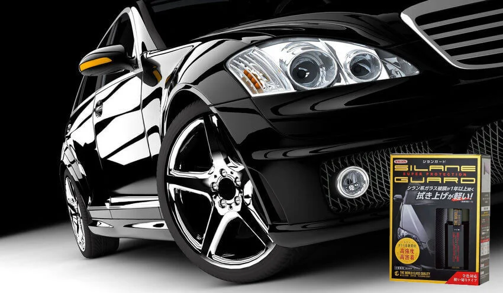

Cтойкая защита и претенциозный блеск кузова — покрытие Silane Guard делает это на все 100%!
Японский бренд Willson представил уникальный продукт, который удивил своей результативностью даже скептиков. Это новое слово в мире автокосметики — «жидкое стекло» Silane Guard.
По результатам защиты ЛКП, зеркальному блеску и стойкому эффекту 1 год, у этого продукта конкурентов нет! И такой комплект прямо из Японии, вы можете приобрести на нашем сайте с гарантией его оригинальности!
Защита кузова — настоящая проблема для абсолютно всех автовладельцев. В результате многочисленных факторов (механических/химических), прочность, первоначальный вид и долговечность ЛКП автомобиля существенно снижается.
Особенно это актуально для автовладельцев мегаполисов.
Традиционные полимерные и восковые полироли не решали проблему с желаемым результатом. Тут спасали только дорогостоящие сервисные процедуры по восстановлению и защите покрытия кузова. Поэтому революционный продукт, разработанный специалистами компании Willson, вызвал настоящий ажиотаж. «Жидкое стекло» SG стало новым словом в авто-детейлинге!
Специалисты утверждают, что новаторский продукт Silane Guard не совсем корректно называть жидким стеклом. Это новый состав, новый высокоэффективный результат, стойкость которого — 1 год! Это новый уровень «керамики» с упрощённой процедурой нанесения.
Состав новой однокомпонентной силановой защиты — это, по сути, доработка популярнейшего у автовладельцев средства Body Glass Guard. Японцам удалось добиться высоких показателей силанового покрытия за счёт введения в структуру полимерной микроплёнки диоксида кремния. В результате достигнуто отличное укрепление связей на микроуровне, что дало сверхпрочную кристаллическую структуру. Крепкая, надёжная связь кремния с водородом — высокие показатели прочности полимерной плёнки. Новое покрытие-полироль не содержит силиконов и воска.
Новая силановая защита ЛКП имеет однокомпонентный состав — больше ничего не требуется смешивать. Японское средство полностью готово к применению!
Как работает и какой эффект применения?
Силановый состав легко ложиться на лакокрасочное покрытие, обволакивает весь кузов, впитывается в микронеровности (трещинки, царапины). Образуется твёрдая высокопрочная микроплёнка, которая надёжно закрепляется на поверхности и стойко противостоит всем внешним факторам, отлично защищая лакокрасочное покрытие. С таким детейлингом по-японски можно не беспокоиться о ЛКП на протяжении 1 года.
Автомобиль возвращает яркую внешность и красивый зеркальный блеск. Даже при покрытии в один слой, авто сверкает как на выставочной площадке автосалона.
Высокие гидрофобные свойства. Отличный водо- и грязеотталкивающий эффект виден сразу. Вода и грязь мгновенно скатываются с защитного силанового покрытия. Автомобиль намного дольше сохраняет чистый вид. Японское средство позволяет хорошо экономить на частых мойках.
Высокоэффективная защита от царапин, пагубного воздействия солевых реагентов. Прочная, кремнийорганическая полимерная пленка практически сводит к нулю повреждения лакокрасочного покрытия от механических/ручных моек. Стойко выдерживает до 50 бесконтактных моек авто